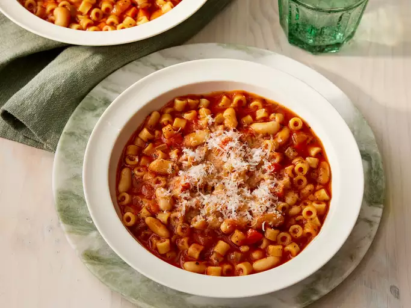

Pasta
Home

Ingredients:
- 200g pasta (spaghetti, penne, or your choice)
- 2 tablespoons olive oil
- 3 cloves garlic (minced)
- 1/2 teaspoon red chili flakes (adjust to taste)
- 1 cup cherry tomatoes (halved)
- 1/4 cup fresh basil (chopped)
- Salt (to taste)
- Black pepper (to taste)
- 1/4 cup grated Parmesan cheese (optional)
- 1/4 cup pasta water (reserved)
Steps:
- Bring a large pot of salted water to a boil. Add the pasta and cook according to package instructions until al dente. Reserve 1/4 cup of pasta water, then drain the pasta.
- While the pasta is cooking, heat olive oil in a large pan over medium heat.
- Add minced garlic and red chili flakes to the pan. Sauté for 1-2 minutes until fragrant.
- Add cherry tomatoes to the pan and cook for 3-4 minutes until they soften and release their juices.
- Add the cooked pasta to the pan and toss to coat it evenly with the sauce.
- If the pasta seems dry, add a little reserved pasta water (1-2 tablespoons at a time) to loosen it up.
- Season with salt and black pepper to taste.
- Turn off the heat and stir in fresh basil.
- Serve hot, topped with grated Parmesan cheese if desired.